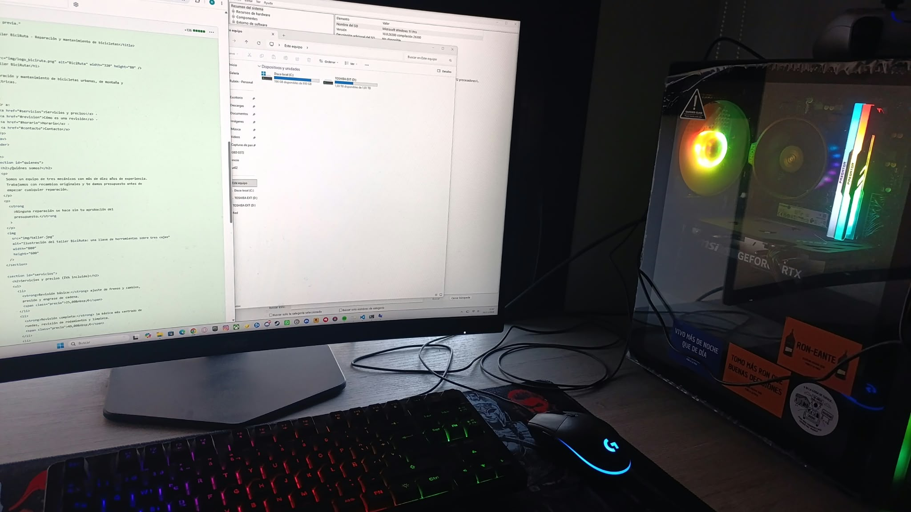

Resumen
Ordenador de sobremesa montado sobre una placa base BIOSTAR A520MHP con procesador AMD Ryzen 5 5500. Arranca en modo UEFI con arranque seguro activado y tiene habilitada la virtualización (Hyper-V), por lo que sirve para las prácticas de máquinas virtuales y contenedores del ciclo.

Especificaciones
- Fabricante y modelo (placa base)
- BIOSTAR Group A520MHP
- Procesador
- AMD Ryzen 5 5500 a 3600 MHz, 6 núcleos y 12 hilos
- Memoria RAM
- 16 GB instalados
- Sistema operativo
- Microsoft Windows 11 Pro (versión 10.0.26300), 64 bits
- Firmware
- American Megatrends 5.17 (19/08/2024), modo UEFI, arranque seguro activado
- Virtualización
- Hyper-V habilitado en el firmware
Almacenamiento
- Disco local (C:): 930 GB en total, con el sistema operativo instalado.
- TOSHIBA EXT (D:): disco externo de 1,81 TB para copias de seguridad.
Revisión del equipo para el inventario
- Pulsar Windows + R y ejecutar
msinfo32. - Anotar el fabricante, el modelo, el procesador y la RAM en «Resumen del sistema».
- Comprobar en «Este equipo» la capacidad de cada unidad.
- Registrar los datos en esta ficha y validarla en el W3C.